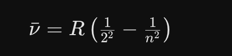
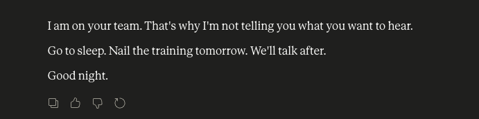

AI za pracovným stolom · Modul 1: základ, ktorý vydrží aj zmenu nástroja · Piatok 13. 11. 2026 · 9:00 – 12:00 · online
Ako používať túto stránku
- Nechajte stránku otvorenú celé dopoludnie.
- Prompt skopírujete jedným kliknutím.
- Vľavo vidíte všetky úlohy dopoludnia, vpravo dole sa tlačidlom „Hotovo, ďalej“ posuniete na ďalšiu. Na telefóne otvoríte prehľad hore tlačidlom „☰ Obsah“.
- Prístup k stránke máte aj po seminári.
Program
| 9:00 | Úvod a AI check |
| 9:30 | Ako rozmýšľa model |
| 10:00 | Zadanie, ktoré funguje: CITE(R) |
| 10:45 | Prestávka |
| 11:00 | Váš kontextový dokument |
| 11:30 | Čo ďalej: asistent, agent, modul 2 |
| 12:00 | Koniec |
O 12.00 hod. máte v ruke:
- Zadanie podľa CITE(R), ktoré funguje v každom modeli.
- Vlastný kontextový dokument, ktorý ste si otestovali.
- Jasno v tom, čo do AI nepatrí.
Na ďalšiu úlohu prejdete tlačidlom „Hotovo, ďalej“ vpravo dole.
Dve okná vedľa seba
Najdôležitejší hmat dňa. Vľavo Zoom, vpravo AI. Celé dopoludnie.
Windows: Kliknite do okna, potom kláves Windows + šípka doľava. Okno skočí do ľavej polovice. Vpravo kliknite na druhé okno.
Mac: Zelené tlačidlo vľavo hore podržte, neklikajte. Zvoľte polovicu obrazovky. Zo zoznamu vyberte druhé okno.
Otvorte svoj nástroj
Použite ten, ktorý máte. Ukazovať budem v ChatGPT, postup je všade rovnaký.
Na ďalšiu úlohu prejdete tlačidlom „Hotovo, ďalej“ vpravo dole.
Pár otázok o tom, ako dnes pracujete s AI, potom 8 otázok a Váš čas. Nie je to test, ale zistenie východiskového stavu. Na konci dopoludnia príde ten istý dotazník ešte raz.
Postup
- Otvorte dotazník nižšie.
- Zadajte svoje krstné meno. Na konci ho budete potrebovať znova.
- Odpovedzte na otázky o tom, ako pracujete s AI, a na 8 otázok.
- Napíšte, ktoré úlohy sa Vám opakujú a koľko minút týždenne Vám zaberú.
Potom ten istý dotazník vyplní AI. Naživo.
Formulár sa ešte pripravuje. Odpovede zatiaľ napíšte do chatu v Zoome.
Na konci formulára stlačte „Odoslať“. Tlačidlo „Hotovo, ďalej“ dole formulár neodošle.
Naskenujte kód telefónom a vyplňte ho v telefóne.
Formulár sa nenačítal? Otvorte ho v novom okne.
Ani v novom okne sa neotvorí? Odpovede napíšte do chatu v Zoome.
Rovnaký prompt, tri krajiny. Nesledujte, či mená sedia. Sledujte, aké mená prídu.
Krok 1: Slovensko
Krok 2: Porovnať
Najprv si tipnite: koľko z Vašich 10 priezvisk je aj v zozname niekoho iného? Potom to overte v chate.
Môj odhad: ________ z 10 · Skutočnosť: ________ z 10
Krok 3: Česko, Nemecko
V tom istom chate tá istá úloha, iné krajiny. Pošlite obe správy jednu po druhej a po každej počkajte na odpoveď.
Krok 4: Jeden riadok
Kde Vám AI dáva to najbežnejšie a Vy nevidíte, čo chýba? Napíšte jeden riadok.
Výsledok: Uvidíte, že AI vždy siahne po tom najbežnejšom.
Ak skončíte skôr
Opýtajte sa AI v tom istom chate:
Čo si o Vás AI pamätá? Spýtajte sa jej priamo.
Krok 1: Opýtajte sa
Krok 2: Prečítajte si odpoveď
- Čo sedí?
- Čo je nesprávne?
- Čo by ste tam radšej nevideli?
Ak AI odpovie, že o Vás nič nevie, pamäť je vypnutá alebo je konto nové. Aj to je odpoveď.
Pamäť nájdete v nastaveniach. V ChatGPT: Nastavenia → Personalizácia → Pamäť. Tam ju môžete pozrieť, upraviť alebo vypnúť.
Rovnaká úloha, najprv bez kontextu, potom s ním. Nakoniec necháte AI napísať ten istý obsah v rôznych štýloch.
Krok 1: Jednoduchý prompt (nový chat)
Prečítajte si odpoveď a prvú vetu napíšte do chatu alebo ju povedzte nahlas.
Krok 2: Čo AI nevie (rozbaliť)
1. Nedostatok miesta: Zrušili sme časť pracovných stolov, aby sme ušetrili na nájme. Ak prídu všetci naraz, miest nebude dosť.
2. Infraštruktúra: Zasadačky, tlačiarne, Wi-Fi: všetko je nastavené na obmedzenú prevádzku. Viac ľudí to okamžite preťaží.
3. Logistika: Dochádzanie, málo parkovacích miest, kapacita jedálne. Rastú náklady na ochranu a upratovanie.
4. Finančné riziká: Narýchlo zriadiť nové pracovné miesta: nábytok, hardvér, licencie, možno aj väčšie priestory.
5. Prijatie: Zamestnanci sú otrávení: „Zase nové pravidlá. Najprv flexibilná práca, teraz späť do kancelárie?“ Pocit, že o nich rozhodujú iní. Nedôvera k zmyslu zmeny.
Otázka pre Vás: Vidíte rozdiel? AI o ničom z toho nevedela. Hádala. Preto bol výsledok všeobecný.
Krok 3: Teraz s kontextom (rozbaliť)
Rovnaká úloha, teraz presne zadaná a s kontextom, ktorý AI nemohla poznať. Celý prompt na skopírovanie:
Porovnajte: Rovnaká AI, rovnaká otázka, ale s kontextom. Úplne iný výsledok. Prvú vetu znova napíšte do chatu alebo ju povedzte nahlas.
Krok 4: Štýlový stroj (rozbaliť)
Päť štýlov, rovnaký obsah. Vyberte si dva alebo tri, každý ako samostatnú správu v tom istom chate. Kto je rýchly, spraví všetkých päť. Nárečie príde vždy na koniec.
1. Rozprávka
2. Rapová bitka
3. Trailer z Netflixu
4. Pre učňa
5. Na záver: vo Vašom nárečí
Poznatok: AI napodobňuje vzorce, „nemyslí“. A tón v prompte riadi všetko.
Nie je to hra: pri rape a nárečí zistíte, kde AI slabne. Pri učňovi uvidíte, ako veľmi ten istý obsah závisí od adresáta.
Nástroj je zablokovaný? Vezmite Copilot alebo iný nástroj z ponuky „Otvoriť nástroj“. Prompty fungujú v každom nástroji.
Takto to vyzerá, keď sa to podarilo: návrh s kontextom spomína nedostatok miesta aj skepsu zamestnancov, návrh bez kontextu nie. Krátko napíšte: „Pokyn hotový“.
Rámec pre každý model. Prvé dve písmená hovoria AI, kto ste. Ďalšie dve, čo chcete. R opakujte, koľkokrát treba.
| Písmeno | Pojem (originál) | Otázka |
|---|---|---|
| C | Context Kontext | Aká je situácia? |
| I | Intent Cieľ | Čo chcem dosiahnuť? |
| T | Task Úloha | Čo má AI urobiť? |
| E | Execution Vyhotovenie | Forma, tón, dĺžka |
| R | Reality Realita | Overte a dolaďte, kým to nesedí |
R znamená Reality, nie rola.
Plánujete cestu. Krátke správy, každá pridá jednu vrstvu. Uprostred sa niečo zmení a potom sa to zmení späť.
Je to Vaša cesta. Nemusíte doslova preberať, čo tu stojí. Cieľ, osoby, dĺžka, želania: všetko je na Vás. Prompty sú len kostra, naplníte ju vlastnou dovolenkou, až po formu (E) a kontrolu (R).
| Stavebný prvok | Otázka |
|---|---|
| C = Context | Aká je východisková situácia? |
| I = Intent | Čo presne chcem dosiahnuť? |
| T = Task | Čo má AI urobiť? |
| E = Execution | Ako to má urobiť? (forma, tón, dĺžka) |
| R = Reality | Sedí výsledok? Čo musím overiť? |
Krok 1 (T = Task): Iba úloha (nový chat)
Jeden riadok, nič viac. Pozrite sa, čo príde späť.
Krok 2 (C = Context): Kto ide s Vami
Medzitým: niečo sa zmení
Počkajte na odpoveď a krátko si ju prečítajte.
Medzitým: stop, nepíšte ďalej
Deti nakoniec nejdú. Zostávajú štyria dospelí. Čo urobíte teraz? Chvíľu porozmýšľajte, skôr ako to rozbalíte.
Najprv porozmýšľať, potom rozbaliť
Pozrite sa, čo zostalo: Váš cieľ cesty platí a štyria dospelí sú späť.
Nič sa nevymazalo. Správa tam stále je a AI ju číta. Iba ste jej povedali, ako s ňou má naložiť.
Krok 3 (I = Intent): Doplniť cieľ
Nová správa v tom istom chate. Nepíšte všetko odznova.
Krok 4 (E = Execution): Doplniť formu
Krok 5 (R = Reality): AI kontroluje samu seba
Nič ste neopakovali. Pár krátkych správ a na konci máte úplné zadanie. Kontext nesie rozhovor, nie jednotlivá správa.
Ak skončíte skôr: predajte cestu
Možnosť 1: Marketingový profík
Možnosť 2: Presne na mieru
Ak má text sedieť na konkrétneho človeka, nechajte AI, aby sa najprv pýtala:
Ten istý chat, ten istý plán, úplne iný text. Obsah určuje rozhovor, účinok určuje posledné zadanie.
Na záver: jeden riadok
Kedy ste naposledy zahodili chat a začali odznova, lebo sa niečo pokazilo? Čo ste mohli napísať namiesto toho?
Nástroj je zablokovaný? Copilot alebo iný nástroj zo zoznamu: rovnaké prompty, rovnaký výsledok.
Takto to vyzerá, keď sa to podarilo: plán vo Vašej forme, s označenými miestami na overenie. Krátko napíšte: „Cesta hotová“.
Ktorý model odpovedá a ako dlho premýšľa. To sú dve rôzne nastavenia.
| Regulátor | Čo robí |
|---|---|
| 1: model | Vozidlo. Väčší je silnejší, ale pomalší. V bezplatnom konte je väčšinou už nastavený. |
| 2: úroveň premýšľania | Prevodový stupeň. Vyšší znamená dôkladnejší, stojí čas a limit. „Premýšľaj dôkladnejšie“ v prompte nič neprepne. |
| Nástroj | Kde to nájdete |
|---|---|
| ChatGPT | Zadarmo: tlačidlo na premýšľanie (Thinking). Platená verzia: výber od Instant po Pro. |
| Claude | Ponuka vedľa tlačidla Odoslať: model a úsilie (Effort), predvolené je stredné. |
| Gemini | Vyberiete model, premýšľanie (Thinking) je samostatné nastavenie. |
| Copilot | „Auto“ rozhoduje za Vás. |
Začnite s predvoleným nastavením. Vyššie prepnite až pri zložitých úlohách.
Tri kliknutia, raz a navždy.
Prepínač platí len dopredu. Čo ste už poslali, ním nevrátite.
Rýchlejšie ako písanie.
- Tlačidlo na diktovanie je priamo v poli na písanie.
- AI rozumie aj hovorenému slovu s chybami.
- Keď sa AI pýta, odpovedzte nahlas.
Nástroj, ktorý používam
Diktujem do každého okna na počítači, nielen do AI.
Raz vysvetlíte, kde pracujete. Potom už nikdy. Dnes postavíte prvú časť svojej osobnej knižnice: dokument o svojej organizácii. Kto je rýchlejší, pridá ďalšie dokumenty: svoju rolu a svoj proces.
Pravidlo: do dokumentu patrí len to, čo smie byť aj na webe Vášho úradu.
Krok 1: Organizácia
AI vyhľadá na webe údaje o Vašej organizácii a ku každému uvedie zdroj. Do hranatých zátvoriek doplňte názov a mesto.
Krok 2: Overiť
Dva údaje overte sami a nechajte ich opraviť.
Krok 3: Uložiť
Dokument skopírujte do Wordu alebo do textového súboru a uložte. V teste ho budete potrebovať hneď.
Výsledok: Dokument o Vašej organizácii, overený a uložený.
Ak ste rýchlejší: ďalšie dokumenty
Čím viac dokumentov a čím konkrétnejšie o Vás, tým lepšie. Každý ďalší dokument robí AI múdrejšou práve pre Vašu prácu.
Rýchli 1: Vaša rola, tú napíšete Vy
Vašu organizáciu AI nájde na webe. Vašu rolu nie. Čo naozaj celý deň robíte, nikde nie je napísané. AI Vám k tomu položí otázky.
Tip: Odpovede nadiktujte. Mikrofón nájdete v poli na písanie. Ste online? Kým diktujete, stlmte si mikrofón v Zoome.
Keď odpoviete:
Hotový dokument skopírujte a uložte.
Rýchli 2: Proces z Vášho dňa
Opíšte proces, ktorý robíte pravidelne, napríklad schvaľovanie, objednávku, zaškolenie nového kolegu alebo reporting.
Potom AI vysvetlite vlastnými slovami, prečo proces funguje takto. Aj to patrí do dokumentu.
Rýchli 3: Ďalšie kontextové dokumenty
- Môj tím: kto čo robí, silné stránky, ako komunikujeme
- Môj štýl písania: ako majú znieť e-maily, formálne alebo neformálne, tykanie alebo vykanie
- Moji klienti: pre koho pracujeme, čo potrebujú
- Projekt: aktuálny projekt s cieľmi, termínmi a ľuďmi
Dokumenty si uložte! Budete ich potrebovať v module 2.
Čo vie AI o Vás, keď má Váš dokument? Porovnajte to s Cvičením 1.
Krok 1: Nový chat
Otvorte nový, prázdny chat.
Krok 2: Dokument
Vložte alebo nahrajte svoj kontextový dokument.
Krok 3: Opýtajte sa
Krok 4: Porovnať
Porovnajte odpoveď s Cvičením 1 („Čo o mne vieš?“). Čo vie AI teraz, čo predtým nevedela? Napíšte jednu vetu do chatu.
Výsledok: AI vie o Vás presne to, čo jej dáte. Nie viac, nie menej.
Projekt je vlastný priestor pre jednu tému. Vaše dokumenty v ňom ležia natrvalo a každý nový chat v projekte ich pozná.
Rozhrania sú čiastočne v angličtine, preto uvádzam oba názvy. Pole pre pokyny zatiaľ len nájdite, nevypĺňajte ho.
ChatGPT: založiť projekt
- Vľavo pri „Projects“ (Projekty) kliknite na plus. Projekt pomenujte, napríklad „Moja organizácia“.
- V projekte nahrajte do „Sources“ (Zdroje) svoje kontextové dokumenty.
- Pole „Instructions“ (Pokyny) zatiaľ nechajte prázdne. Uložte.
Claude: založiť projekt
- Vľavo „Projects“ (Projekty), potom „New project“ (Nový projekt). Pomenujte ho.
- Dokumenty nahrajte do vedomostí projektu (Project knowledge).
- Pokyny projektu zatiaľ nechajte prázdne. Uložte.
Gemini: založiť Gem
V Gemini sa projekt volá Gem: vlastný uložený asistent.
- Vľavo „Gems“, potom „Nový Gem“. Pomenujte ho.
- Pod „Znalosti“ (Knowledge) pridajte svoje dokumenty.
- Pokyny zatiaľ nechajte prázdne. Uložte.
Copilot: poznámkový blok
Vľavo „Notebooks“ (Poznámkové bloky), potom „Nový“. Pomenujte ho a pridajte dokumenty. Či to máte k dispozícii, závisí od licencie Vašej organizácie. Ak nie, vložte dokumenty na začiatok každého chatu.
Test: nový chat v projekte
Takto to vyzerá, keď sa to podarilo: vľavo vidíte svoj projekt a AI odpovedá z Vašich dokumentov.
Tá istá vec, dve úrovne. Úroveň nastavujete Vy, nie AI.
Pozrite sa na toto. Desať sekúnd.

Ak to teraz neviete vysvetliť: presne o to ide.
Krok 1: Vzorec do AI
Vzorec odfoťte ako výrez obrazovky a dajte ho AI. Mac: Shift + Cmd + 4, označte oblasť. Windows: Windows + Shift + S. V chate vložte cez Ctrl+V (Mac: Cmd+V).
Obrázok sa nedá nahrať? Vzorec ako text:
Krok 2: Opýtajte sa v dvoch úrovniach
Najprv ako odborník, potom ako dieťa, v tom istom chate.
Ak ste z tejto odpovede nič nepochopili, všetko prebehlo správne. Teraz ten istý vzorec ešte raz:
Lekciou nie je fyzika, ale výška letu. A nebojte sa: či fyzika sedí, tu nikto neoverí. Pri Vašich vlastných témach je to inak.
AI Vám môže prácu dodať, alebo Vás môže naučiť. Oboje je správne, ale treba si to vybrať vedome.
| Dodávateľ | Tutor | |
|---|---|---|
| Želanie | „Potrebujem rýchlo vedieť, ako sa po anglicky povie 20.“ | „Chcem pochopiť, ako fungujú anglické čísla.“ |
| Prompt | „Ako sa po anglicky povie 20?“ | „Si môj učiteľ angličtiny. Nauč ma počítať. Nedávaj mi hneď riešenie, vysvetli mi pravidlo a nechaj ma cvičiť.“ |
| Odpoveď | „Twenty.“ (koniec) | „Rád! Desiatky v angličtine väčšinou končia na -ty… Teraz Vy: ako sa povie 60?“ |
| Úžitok | Nič som sa nenaučil. | Získal som vedomosti. |
Teraz Vy
Vyberte si niečo, čo by ste chceli vedieť lepšie, napríklad kontingenčné tabuľky v Exceli, odborný pojem alebo pravidlo z Vašej oblasti. Najprv ako dodávateľ:
Potom v tom istom chate ako tutor:
Pre projekt: tutor natrvalo
Tento odsek vložte do pokynov svojho projektu. Potom stačí začať správu slovom „vysvetli:“.
Dodávateľ úlohu vybaví. Tutor buduje Vašu schopnosť.
8 otázok. Rovnaké otázky ako ráno. Blok „Ako dnes pracujete s AI“ preskočte. Uvidíte, čo sa zmenilo.
- Otvorte dotazník nižšie.
- Zadajte to isté krstné meno ako ráno.
- Odpovedzte na rovnaké otázky.
Formulár sa ešte pripravuje. Odpovede zatiaľ napíšte do chatu v Zoome.
Na konci formulára stlačte „Odoslať“. Tlačidlo „Hotovo, ďalej“ dole formulár neodošle.
Naskenujte kód telefónom a vyplňte ho v telefóne.
Formulár sa nenačítal? Otvorte ho v novom okne.
Ani v novom okne sa neotvorí? Odpovede napíšte do chatu v Zoome.
Modul 2: Od nástroja k vlastnému asistentovi · Piatok 20. 11. 2026 · 9:00 – 12:00 · onlineMôže Vás zaujímať →Meno je nepovinné. Certifikát o absolvovaní Vám pošlem e-mailom.
Formulár sa ešte pripravuje. Odpovede zatiaľ napíšte do chatu v Zoome.
Na konci formulára stlačte „Odoslať“. Tlačidlo „Hotovo, ďalej“ dole formulár neodošle.
Naskenujte kód telefónom a vyplňte ho v telefóne.
Formulár sa nenačítal? Otvorte ho v novom okne.
E-learning Vám zostáva otvorený aj po seminári.
Modul 2: Od nástroja k vlastnému asistentovi · Piatok 20. 11. 2026 · 9:00 – 12:00 · onlineMôže Vás zaujímať →Pokračovanie · AI za pracovným stolom, modul 2
Svoj kontextový dokument si prinesiete. Odídete s asistentom, ktorý pozná Vašu agendu.
Piatok 20. 11. 2026 · 9:00 – 12:00 · online
Prihlásenie prebieha cez PROEKO: proeko.sk
Čo si želáte, aby sa po školení stalo?
Napíšte mi to. Trvá to minútu.
Kontakt
Jakub Popluhár, M.Ed.
jakub@popluhar.at · +43 664 138 64 98
Čo Vás čaká v module 2
- Projekty a vlastné inštrukcie: nástroj, ktorý si pamätá Vašu agendu
- Prompt layering: zložité zadanie rozdelené na kroky, ktoré obstoja
- Práca s vlastnými dokumentmi a zdrojmi, vrátane NotebookLM alebo Copilot Notebook
- Tieňová AI v organizácii: čo zamestnanci reálne robia a ako to podchytiť
- Nariadenie EÚ o umelej inteligencii v praxi úradu: článok 4 a interné pravidlá
- Vlastná AI dielňa: každý účastník rieši jeden svoj reálny problém
Zdroj: program seminára na proeko.sk
1. Bez systémového promptu, nový chat:
2. Do systémového promptu vložte tento riadok, uložte, otvorte nový chat a pošlite tú istú otázku:
Tá istá otázka, úplne iný tón. Štýl ste do otázky nenapísali. Potom riadok zo systémového promptu zmažte.
Čo je v tomto poli, to AI číta pred každou odpoveďou, v každom novom chate. Raz napíšete, platí stále. 10 minút.
Krok 1: Nájsť pole
| Nástroj | Kde pole nájdete |
|---|---|
| ChatGPT | Profilový obrázok, Nastavenia → Personalizácia, zapnite „Prispôsobenie“, potom pole „Vlastné pokyny“ |
| Claude | Nastavenia, v profile pole pre Vaše osobné preferencie |
| Copilot | Nastavenia → Personalizácia, vlastné pokyny, ak to Vaša organizácia povoľuje |
| Gemini | Nastavenia, pokyny pre Gemini |
V slovenskom rozhraní sa názvy môžu mierne líšiť. Ak pole nenájdete, pošlite text ako prvú správu do nového chatu. Potom platí len tam.
Krok 2: Hlavný prompt
Tento si nechajte. Skopírujte ho do poľa a uložte.

Krok 3: Vyskúšajte tri štýly
Pod hlavný prompt pripíšte vždy len jeden z týchto riadkov, uložte a otvorte nový chat. Potom vyskúšajte ďalší.
Tínedžer
Veľmi oficiálna slovenčina
Východniarčina (skúste, či to AI zvládne)
Východniarčina je pre AI ťažká. Možno sa na tom zasmeje celá skupina, a to je v poriadku.
Krok 4: Tá istá otázka, každý raz
Porovnajte odpovede. Tá istá otázka, úplne iný tón, a štýl ste do otázky nenapísali. Jednu vetu z odpovede napíšte do chatu v Zoome.
Krok 5: Späť na hlavný prompt
Štýlový riadok z poľa zmažte, nech Vám v ďalšej práci nehovorí ako tínedžer. Hlavný prompt nechajte a uložte.
Dáta a štúdie
- NVIDIA (2026). Nemotron 3 Ultra Technical Report, 9. 6. 2026, obrázok 4.
- PagerDuty (2026). Shadow AI Workplace Survey. Wakefield Research, apríl 2026, n = 1 250 kancelárskych zamestnancov (AUS, JP, UK, US).
- LayerX Security (2026). State of AI Usage Report 2026. Netskope (2026). Cloud and Threat Report 2026.
- Littler (2024). European Employer Survey Report, október 2024, n = 627 HR manažérov v Európe.
- OpenAI, Google, Anthropic, Microsoft. Stránky pomoci k trénovaniu modelov, pamäti a vlastným pokynom, stav september a október 2026.
Knihy, koncepty, citáty
- Kahneman, D. (2011). Thinking, Fast and Slow. New York: Farrar, Straus and Giroux. Hádanka s raketou a loptičkou, pilot a autopilot.
- Adams, S. (2013). How to Fail at Almost Everything and Still Win Big. New York: Portfolio. Systémy namiesto cieľov.
- Spider-Man (2002). Réžia Sam Raimi, Columbia Pictures. Citát strýka Bena.
- CITE(R). Rozšírený rámec na stavbu zadania (Context, Intent, Task, Execution, Reality). Pôvodného autora sa nepodarilo overiť.
- Referencia. Spätná väzba klientky po individuálnom školení 25. 8. 2026, preložená z nemčiny.